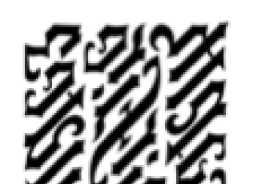

71
Hawker rotasını düzeltip burnunu İngiltere’ye çevirdiğinde Langdon kalkıştan beri kucağında koruduğu gül ağacı kutuyu dikkatle kaldırdı. Kutuyu masanın üstüne koyarken, Sophie ile Teabing’in merakla öne doğru eğildiğini hissedebiliyordu.
Kapağı kaldırıp kutuyu açan Langdon, dikkatini kripteksin üstündeki harflere değil, kapağın altındaki minik deliğe vermişti. Bir kalemin ucunu kullanarak, üstteki gül kabartmasını dikkatle çıkarıp, altındaki metni açığa çıkardı. Sub rosa, diye mırıldanırken, metne dikkatle yeniden bakınca anlayacağını ümit ediyordu. Langdon tüm enerjisini yoğunlaştırarak, tuhaf metni inceledi.

Bir süre sonra, ilk hissettiği hüsran duyguları yeniden canlanmaya başlamıştı. “Leigh, hiçbir şeye benzetemiyorum.”
Sophie masanın karşısında oturduğu yerden metni göremediği halde, Langdon’ın lisanı hemen tanıyamaması onu hayrete düşürmüştü. Büyükbabam bir simgebilimcinin bile tanımlayamadığı bir lisan mı konuşuyordu? Sonra hemen bunun o kadar da şaşırtıcı olmaması gerektiğini fark etti. Jacques Saunière’in torunundan sakladığı tek sır bu olmamalıydı.
Sophie’nin karşısındaki Leigh Teabing patlamak üzereydi. Metni görmek için sabırsızlanırken heyecanla titreyerek, kamburunu çıkartıp kutuyu kapatmış olan Langdon’ın arkasından yazıyı görmek için öne doğru eğildi.
Langdon dalgın bir edayla, “Bilmiyorum,” dedi. “İlk tahminim Sami diliydi ama şimdi o kadar emin değilim. Pek çok Sami dilinde harekeler vardır. Bunda yok.”
Teabing, “Belki de çok eskidir,” diye tahminde bulundu.
Sophie, “Hareke mi?” diye sordu.
Teabing gözlerini kutudan bir an olsun ayırmıyordu. “Çağdaş Sami alfabelerinin çoğunda ünlü harfler yoktur ve ünsüz harfle hangi ünlünün beraberinde kullanılacağını göstermek için hareke kullanırlar, ünsüz harflerin altına veya yanına eklenen minik noktalar ya da kesme işaretleri. Tarih açısından bakacak olursak, harekeler lisana yakın zaman önce eklenmişlerdir.”
Langdon hâlâ kıpırdamadan yazıyı inceliyordu. “Belki de başka alfabeyle yazılmış Sefardik dilidir...”
Teabing daha fazla dayanamayacaktı. “Belki ben...” Uzanarak kutuyu Langdon’ın önünden kendine doğru çekti. Langdon’ın bilinen eski dillere -Yunan, Latin, Roma- aşina olduğuna hiç şüphe yoktu ama kısa bir süre bakabildiği bu lisan Teabing’e daha karmaşık bir dili, belki Raşi ya da STAM34 yazısını andırıyordu.
Teabing derin bir nefes alarak, gözlerini oymalı yazıya dikti. Uzun süre tek kelime etmedi. Teabing her geçen saniyede, kendine duyduğu güvenin kaybolduğunu hissediyordu. “Çok şaşkınım,” dedi. “Bu lisan şimdiye dek gördüğüm hiçbir şeye benzemiyor!”
Langdon koltuğuna yığıldı.
Sophie, “Görebilir miyim?” diye sordu.
Teabing, onu duymamış gibi davrandı. “Robert, daha önce buna benzer bir şey gördüğünü söylememiş miydin?”
Langdon’ın canı sıkkın gibiydi. “Öyle sanmıştım. Emin değilim. El yazısı bir şekilde tanıdık geliyor.”
Tartışmaya dahil edilmediğine pek sevinmediği anlaşılan Sophie, “Leigh?” diye tekrar etti. “Büyükbabamın yaptığı kutuya bakabilir miyim?”
Kutuyu ona doğru iten Teabing, “Elbette hayatım,” dedi. Niyeti onu küçümsemek değildi ama Sophie Neveu’nun onunla aynı kefeye konulması için bir fırın ekmek yemesi lazımdı. Eğer bir İngiliz Kraliyet Tarihçisi ve Harvard’lı bir simgebilimci bile lisanı tanımlayamıyorlarsa...
Sophie kutuyu inceledikten saniyeler sonra, “Aaa,” dedi. “Tahmin etmeliydim.”
Teabing ile Langdon aynı anda dönüp ona baktılar.
Teabing, “Neyi tahmin etmeliydin?” diye sordu.
Sophie omuzlarını silkti. “Bunun büyükbabamın kullandığı lisan olduğunu.”
Teabing, “Şimdi bu metni okuyabildiğini mi söylüyorsun?” diye sesini yükseltti.
Eğlenmeye başladığı anlaşılan Sophie, neşeyle, “Hem de çok kolay,” dedi. “Büyükbabam bu dili bana altı yaşındayken öğretti. Çok iyi biliyorum.” Masanın öbür tarafına doğru eğilerek, Teabing’e ters ters baktı. “Ve samimi olmak gerekirse bayım, kraliyet ailesine bu kadar bağlı olmanıza rağmen yazıyı tanıyamamanıza çok şaşırdım.”
Langdon bir anda anlamıştı.
El yazısının bu kadar tanıdık gelmesine şaşmamak lazım!
Langdon yıllar önce Harvard’ın Fogg Müzesi’ndeki bir davete katılmıştı. Harvard’daki eğitimini yarım bırakan Bill Gates, paha biçilmez edinimlerinden birini müzeye vermek için eski okuluna dönmüştü... Armand Hammer Vakfı’ndaki açık arttırmadan satın aldığı on sekiz sayfayı.
Arttırmayı kazandığı fiyat... 30.8 milyon dolar gibi sağlam bir rakamdı.
Sayfaların yazarı... Leonardo da Vinci idi.
Bu on sekiz sayfa -şimdilerde Leicester El Yazmaları olarak bilinen ve adını eski sahibi Leicester Kontu’ndan alan- Leonardo’nun büyüleyici not defterlerinden geriye kalan son sayfalardı. Denemeler, Da Vinci’nin astronomi hakkındaki teorilerinin çizimleri, jeoloji, arkeoloji ve hidroloji konusunda yaptığı çalışmaların özetiydi.
Langdon sırada bekledikten sonra, paha biçilmez parşömeni ilk gördüğü anı asla unutamıyordu. Mutlak hayal kırıklığı. Sayfalar anlaşılmazdı. Güzel korunmuş ve düzgün bir el yazısıyla -krem rengi kâğıt üstüne kırmızı mürekkeple- yazılmış olmasına rağmen, yazılar anlamsız görünüyordu. Langdon ilk başta, Da Vinci defterlerine arkaik İtalyancayla yazdığı için okuyamadığını sanmıştı. Ama daha yakından inceledikten sonra, tek bir İtalyanca kelimeyi, hatta harfi bile tanıyamadığını fark etmişti.
Sergi tezgâhının başında duran bayan doçent, “Bunu deneyin efendim,” diye fısıldamıştı. Tezgâhın üstünde zincirle asılı duran el aynasını göstermişti. Langdon aynayı eline alıp, aynadaki metni incelemeye koyulmuştu.
Her şey bir anda anlaşılır olmuştu.
Langdon, büyük düşünürün fikirlerini okumaya öylesine heveslenmişti ki, onun sayısız sanatsal yeteneğinden biri olan tersten yazma üslubunu unutmuştu. Böylece yazdıklarını kendisinden başka kimse anlayamıyordu. Tarihçiler hâlâ Da Vinci’nin eğlence olsun diye mi yoksa omzundan yazdıklarını okuyup fikirlerini çalmaya çalışanları uzak tutmak için mi böyle yazdığı konusunda tartışıyorlardı ama gerçek olan bir şey vardı. Da Vinci canının istediğini yapmıştı.
Robert’ın kendisini anladığını fark eden Sophie tebessüm etti. “İlk birkaç kelimeyi okuyabiliyorum,” dedi. “İngilizce.”
Teabing heyecanlanmıştı. “Neler oluyor?”
Langdon, “Tersten yazılmış,” dedi. “Bir aynaya ihtiyacımız var.”
Sophie, “Hayır yok,” dedi. “Bu ağacın yeterince ince olduğunu zannediyorum.” Gül ağacı kutuyu duvardaki ışığa tutarak, kapağın altını incelemeye başladı. Büyükbabası aslında tersten yazamıyordu, bu yüzden önce normal yazıp, sonra kâğıdı ters çevirerek yazıların üstünden geçmek gibi bir hileye başvuruyordu. Sophie, büyükbabasının metni bir tahtanın üstüne yakarak düzden yazdıktan sonra tahtanın arkası kâğıt inceliğine gelene kadar zımparaladığını tahmin ediyordu. Böylece tahtaya yakılarak kazınan yazı tersten bakıldığında okunur olacaktı. Ardından tahta parçasını ters çevirip yerine yerleştirmiş olmalıydı.
Sophie kapağı ışığa iyice yaklaştırdığında haklı olduğunu gördü. Işık ince tahtadan süzülmüş ve kapağın arkasındaki yazı meydana çıkmıştı.
Yazı okunuyordu.
Başını utançla sallayan Teabing, “İngilizce,” dedi. “Anadilim.”
Uçağın arkasında oturan Rémy Legaludec, ön tarafta konuşulanları duymak için kendini zorluyor ama motor sesinden duyamıyordu. Rémy gecenin akış şeklinden hoşlanmamıştı. Hem de hiç. Ayaklarının dibinde bağlı bir şekilde uzanan keşişe baktı. Adam hiç kıpırdamadan duruyordu, bir çeşit kabullenme haline geçmiş ya da sanki kurtuluş için sessiz bir dua okuyor gibiydi.
34 İbranice şifreli elyazmaları.